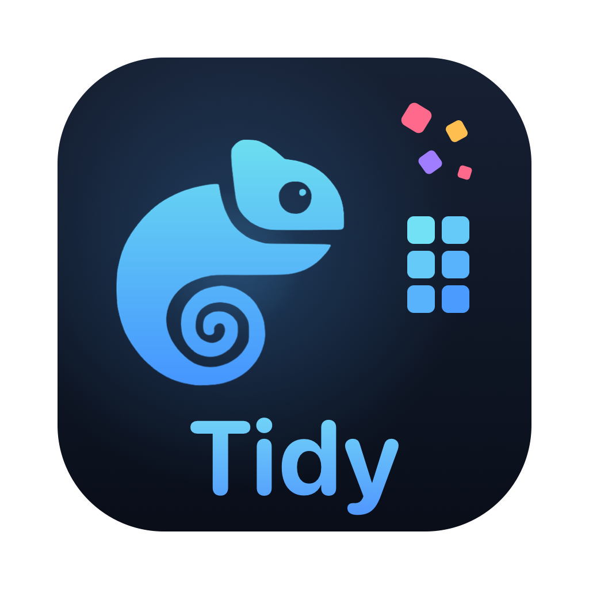
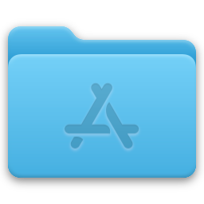
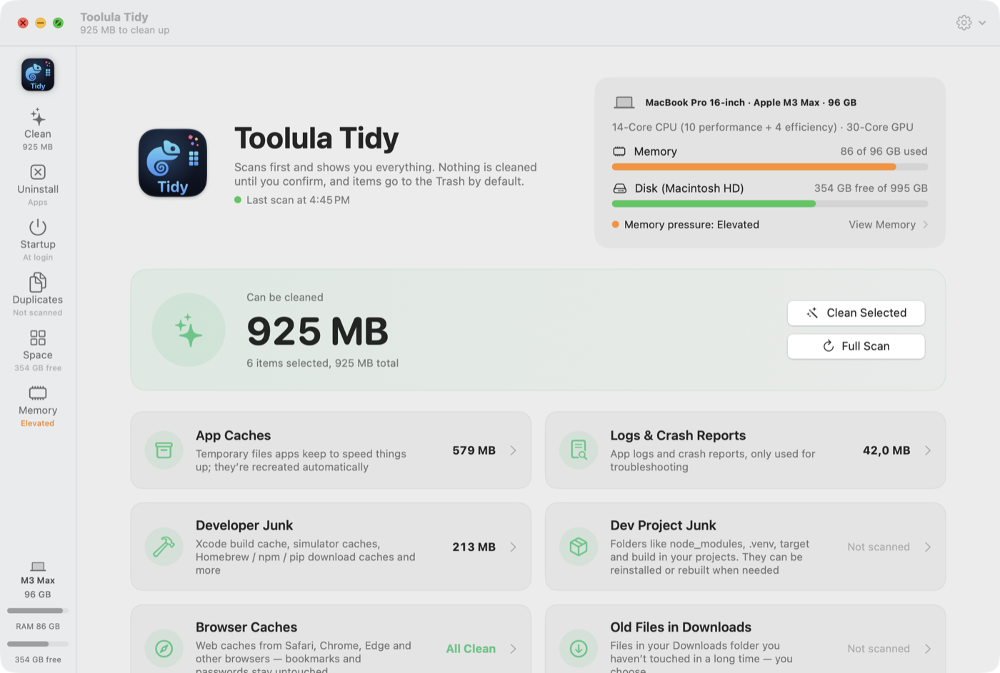

A safe, fast cleaner for your Mac — step-by-step setup guide
Version 1.0.0macOS 14 Sonoma or laterApple silicon & IntelOpen the project’s Releases page on GitHub and download ToolulaTidy-1.0.0.dmg from the Assets section of the latest release.
github.com/yuna7770/toolula-tidy/releases
Double-click the downloaded .dmg file. A window opens with the app and a shortcut to your Applications folder. Drag Toolula Tidy onto the Applications folder.

ApplicationsWhen the copy has finished, eject the installer: click the eject button next to Toolula Tidy 1.0.0 in the Finder sidebar. You can then delete the .dmg file.
Open Applications and double-click Toolula Tidy. Because this version is not yet signed with an Apple Developer ID, macOS stops it the first time and shows a message like this:
Click Done (not “Move to Trash”). Then allow the app once:
You only need to do this once. From now on Toolula Tidy opens normally.
xattr -dr com.apple.quarantine "/Applications/Toolula Tidy.app"
macOS protects some folders — such as the Trash and certain caches — even from apps you trust. To let Toolula Tidy see and clean them:
Shortcut: in Toolula Tidy, open the gear menu (top right) and choose Open Full Disk Access Settings…
Toolula Tidy scans the safe categories as soon as it opens. Review the results, tick what you want to remove, and click Clean Selected. Use Undo in the notification (or in the cleaning history) to put things back.

The overview: how much can be cleaned, plus Clean, Uninstall, Startup, Duplicates, Space and Memory in the sidebar.
Download the new .dmg from the Releases page and drag Toolula Tidy into Applications again. Choose Replace when Finder asks. Your settings and cleaning history are kept. If the app is still unsigned you may need to confirm Open Anyway once more (step 3).
Toolula Tidy follows your Mac’s language automatically (10 languages). To choose one yourself, open the gear menu → Language. The change applies immediately.
| “Toolula Tidy” is damaged and can’t be opened | The download flag is blocking it. Move the app to Applications and run the Terminal command from step 3, then open it again. |
| No “Open Anyway” button in Privacy & Security | The button appears only for about an hour after a blocked launch. Try opening the app again, then go straight back to Privacy & Security. |
| “You can’t open the application … because this application is not supported on this Mac” | Your Mac runs an older macOS. Toolula Tidy needs macOS 14 Sonoma or later. |
| The Trash category shows a lock or asks for access | Grant Full Disk Access (step 4), then quit and reopen the app. |
| Full Disk Access is on, but still no access | Remove Toolula Tidy from the list with –, add it again with +, and restart the app. This happens after replacing the app with a new build. |
| The Dock still shows an old icon | macOS caches icons. Quit and reopen the app; if needed, restart the Mac. |
| Something was removed by mistake | Click Undo in the notification, or use Undo next to that entry in the cleaning history on the overview page. Items moved to the Trash can also be put back from the Trash. |
Toolula Tidy 1.0.0 · Installation Guide · Screens and messages may differ slightly between macOS versions.